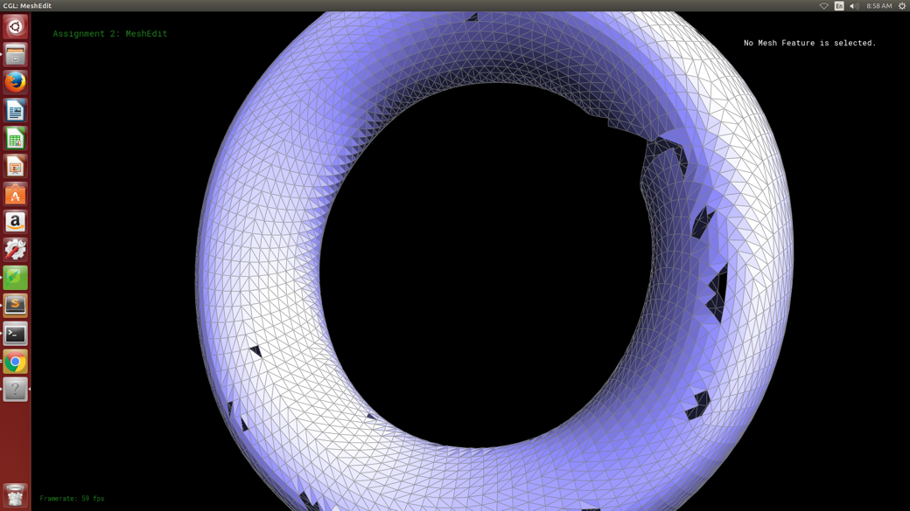
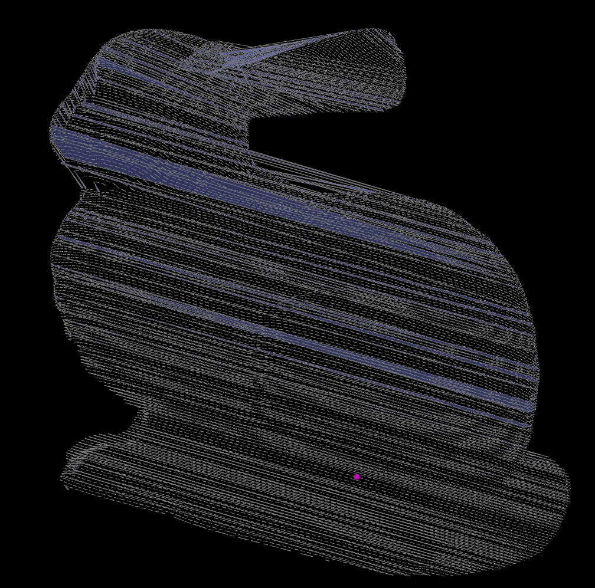

|
|

|
Our project was to read in ply files and construct meshes using the ball pivoting algorithm, outlined in an IBM research paper. The basics of the algorithm are that we take the vertex locations from the ply file and select a suitable seed triangle through brute force. From there we pivot the ball around the vertices of our seed, building our mesh outward from there until we can't reach anymore points, at which point we pick another triangle. The below image is a good 2D visualization of what is happening here.
Expanding the mesh requires various reassingments, additions, and deletions in the halfEdgeMesh structure taken from project 2. Other problems involved in this process include deciding on the radius to use for our ball and being able to search for vertices efficiently.
The first order of business was getting points from a ply file into an easily readible format, which we did using the RPLY library as discussed before. Then we calculate normals for these points. This was considerably harder than the process we went through in project 2 for doing this because we had no face normals to work with. Thus we used a combination of planar regression and the points relation to the overall structure instead to calculate the normal. This is a little different from the paper and what the previous year's group did since the paper had the normal data from the scan, and last years group kept the normal data from the mesh before stripping the edge and face geometry to try reconstruction,
Next came the process of learning how to use OpenGL to get these points and normals to render so that we could have a truly functional GUI compared to our milestone GUI. Below are some of the results.
Next came the process of creating an acceleration structure. The paper used a data structure called an octree to do this, but what we did instead was borrow from the cloth animation project to create a spaial hashmap in which divide the vertices into a grid of voxels. These voxels have a size based on the radius of the ball. Most papers decided upon this radius size empirically or estimate a good one based on a formula but we did a sort of binary search for the radius by recreating the hashmap until we had what we thought was an acceptable number of vertices per voxel. For us this meant that each vertex needed to have at least 3 other vertices in its neighborhood, but we also wanted the average number of vertices per voxel to get as close to 3 without violating that constraint. If we had more time, we would've liked to create a GUI representation of these voxels, much like the BVH representation from the path tracing project.
The next problem was finding a seed triangle. This was done through a brute force method mainly, and since we needed to search for 3 vertices, this is the most computationally intense part of the project, taking N^3 time. The next part of the project was expanding the front by pivoting the ball on the boundaries of the current mesh. Pivoting the ball itself was relatively simple, it was process that involved computing the circumcenter of two points on our fringe and the vertex being considered to be added to the mesh and determining if it would match a ball with the radius we definied. Adding vertices however is a much different story. There were 4 different cases for how a vertex could be added to the mesh as shown in the image below.
This was probably the most difficult part of the project. Even though these edge cases look pretty well defined from the diagram above, in practice the faces, edges, and halfedges we needed to update were dependent on the direction the ball pivoted in from, thus giving us a large number of edge cases that we had little ability to account for. We ran into many problems where we were building the mesh and it would suddenly stop, leaving us to try and out what edge case we had missed this time. We will leave a video in the results section so that you can see how this looks when the mesh is built one triangle at a time.
We have many problems with malformed meshes, especially when normals aren't well defined. This leads to us being able to make patches of the mesh before hitting a segfault. If we had more time, we would've liked a way to catch these segfault and continue creating more patches until we had an almost complete mesh, but unfortunately we didn't have as much time to work on the project as we would've liked. Another problem we had was with normal calculation. Using just planar regression isn't helpful when you have many points on a surface that has a large gradient, and it also doesn't give us the correction direction for the normal all the time. That is why we made the decision to base our normals also on centroids of the various neighborhoods of points. The decision to use the hashmap instead of octree was something we thought would make our code simpler, and also provide us a computationally efficient way to choose a radius. If we had done an octree instead, it would've been infeasible to repeatedly create such a complex structure for different radius valuues. The hashmap was essentially getting us two birds with one stone
Some of the lessons we learned include a very good appreciation for how complicated geometry processing can really get and an ability to create a working product in a very short amount of time...
This is probably the best result we got back. The interesting thing about this construction is that even though most of this was built from one seed triangle (colored in white), many hole filling seed triangles were created all sequentially at the very end.
|
|
|
Here is an example of an incomplete mesh, created from the model of a torus. This is mostly due being unable to correctly generate the correction direction for many of the normals on the torus surface, which will stop the ball from pivoting in those incorrect patches.
|
|

|
This is a patch that we got on our rabbit from just 1 seed triangle. If we had a little more time, we would've liked to put some of these patches together, and will likely display these results on the persistent website a within the next few days. I will not however, that this mesh looks really good and is very complete, much more complete than previous year's groups as there are no visible holes in the patch. With a few more hours of work, we feel that achieviing a complete mesh would be possible.
Now here is a video of the mesh being constructed one triangle at a time.
Daniel: Handled the algorithms for finding the seed triangle, pivoting the ball, and expanding the front (all of the mesh reassignments/adjustments)
Inan: Handled the ply conversion to a readable format, the rendering pipeline for the GUI, building the voxel acceleration structure, calculating/making normals consistent and the algorithm for searching for the proper radius to use
So we've met our goal of being able to take a ply file and load into the existing MeshEdit structure and we are currently producing an extremely naive implementation of converting the point cloud to a mesh.
The first step we had to take was being able to parse the ply files. We did this using the RPly library suggested by the previous years point cloud to mesh group.
From here, we simple had a file that contained the number of vertices and every line after that contained the x,y, and z coordinates of the vertex. We then created another parser in the collada.h
file that took these vertices, normalized their positions, and pushed them into the scene. Of course, MeshEdit doesn't really render individual vertices so we just went straight to trying to convert the points into a mesh because we don't have time to figure out a good way to render the points in OpenGl.
Next we worked on tried a couple ways to make this more like a point cloud, and we found the best way was to link 3 consecutive points with some added entropy.
Our first naive implementation is simply connecting the polygons together in sequence. While the results are almost certainly not good for a final result, we're pretty happy where we are, as we're still on pace with our goals set.
Next steps are basically just getting the Ball Pivot Algorithm to work at this point, and hopefully being able to then work on some of our stretch goals afterwards.
|
|
|
|

|
|
The slides can be viewed here and this is the link to our Youtube video: https://youtu.be/CYN6ynNkU6E.
The goal of our project is going to be convert point cloud meshes (in the ply format) to meshes(in the dae) format.
3D scanners normally output data in the form of a point cloud, which is useful for many different applications in industry such as CAD modeling. Converting these point clouds to meshes is a problem worth solving because it gives us greater geometric data with which we can use algorithms for ray tracing, collision detection, or and rigid-body dynamics on the constructed mesh. This is definitely a challenging problem given the huge space of the problem. Point clouds can contain thousands of points, how are we supposed to connect these algorithmically in an efficient but also correct manner. The large number of points to connect to allows for the creation of undesirable meshes with unbalanced polygons. Some post processing may be necessary. We are looking to use the ball pivot algorithm in order to build the mesh, with perhaps using Poisson reconstruction as a stretch goal. Aside from that some other extensions we were looking at for this project include preprocessing for the point cloud, getting BRDF values with flash/no flash and assign them to a material, creation of STL files from the mesh so that it may be 3D printed and so on.
A working implementation of the Ball Pivot algorithm (BPA) using the MeshEdit project as base so that we have a working foundation for HalfEdge. We would like to deliver images of the final constructed mesh as well as a video or gif of the construction process.
An implementation of Poisson construction which would have similar deliverables as the BPA, and we would also produce comparison images and times between the two algorithms on different point cloud inputs
Post processing of the constructed mesh, we would likely produce comparison images of the mesh before and after processing
Producing BRDF values and then using our raytracer to render the image
Picture to point cloud, deliverables would just be ply files and the images from which we produced them
Creation of STL files from meshes so that we can 3D print some of this stuff
We do recognize that is definitely going to be impossible to do any more than 1 or 2 or these stretch goals, these are mostly just listed as possibilities that we would like to investigate further
Be able to load point cloud into MeshEdit, be able to produce point cloud in GUI from an input ply file.
Naive mesh generated from the points that were read in, not necessarily a full implemenation of Ball Pivot algorithm
Get a full working implementation of BPA
Reserved for one of the stretch, likely picture to point cloud
This is honestly a very conservative estimate for what we hope to accomplish with this project. Ideally we'd like to get a full working implementation of BPA sooner, probably around week 2. This would give us more time to dedicate to one or more of our stretch goals.
We would use the The Stanford 3D Scanning Repository as a place to get our initial point clouds from. We would use these two papers here and here to implement BPA and Poisson reconstruction. We'd use these videos (here and here) as starting points for generating a point cloud from several pictures taken. Should we decide to work on more of the other stretch goals, we'll like find our resources for those ideas as well.
We will be developing using C++ on either OS X or Ubuntu using the MeshEdit code from Project 2/3.